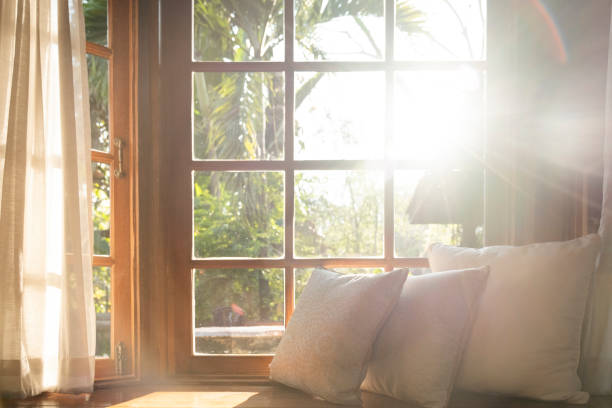

A window is a vented barrier provided in a wall opening to admit light and air into the structure and also to give outside view. Windows also increases the beauty appearance of building.
Fixed windows are fixed to the wall without any closing or opening operation. In general, they are provided to transmit the light into the room. Fully glazed shutters are fixed to the window frame. The shutters provided are generally weather proof.
In this case, window shutters are movable in the frame. The movement may be horizontal or vertical based on our requirement. The movement of shutters is done by the provision of roller bearings. Generally, this type of window is provided in buses, bank counters, shops etc..
In this type of windows, pivots are provided to window frames. Pivot is a shaft which helps to oscillate the shutter. No rebates are required for the frame. The swinging may either horizontal or vertical based on the position of pivots.
Double hung windows consist of pair of shutters attached to one frame. The shutters are arranged one above the other. These two shutters can slide vertically with in the frame. So, we can open the windows on top or at bottom to our required level.
Louvered windows are similar to louvered doors which are provided for the ventilation without any outside vision. The louvers may be made of wood, glass or metal. Louvers can also be folded by provision of cord over pulleys.
Sash window is type of casement window, but in this case panels are fully glazed. It consists top, bottom and intermediate rails. The space between the rails is divided into small panels by mean of small timber members called sash bars or glazing bars.